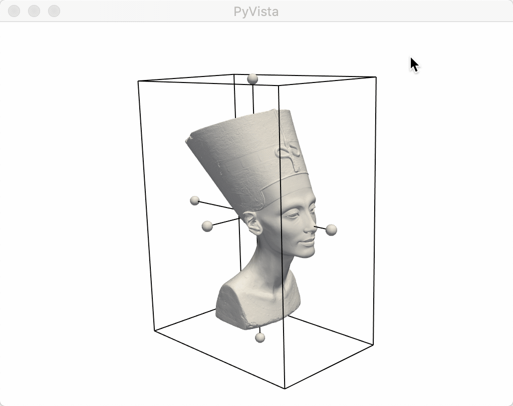
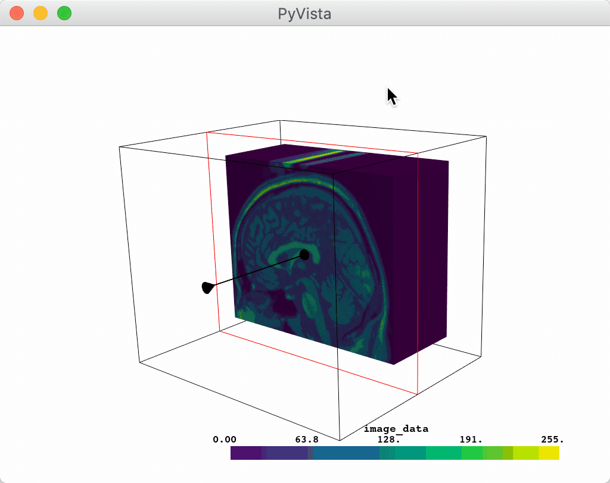
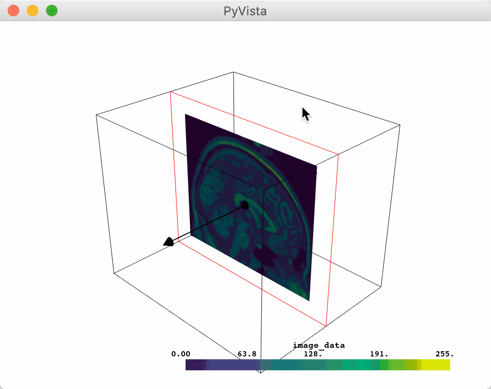
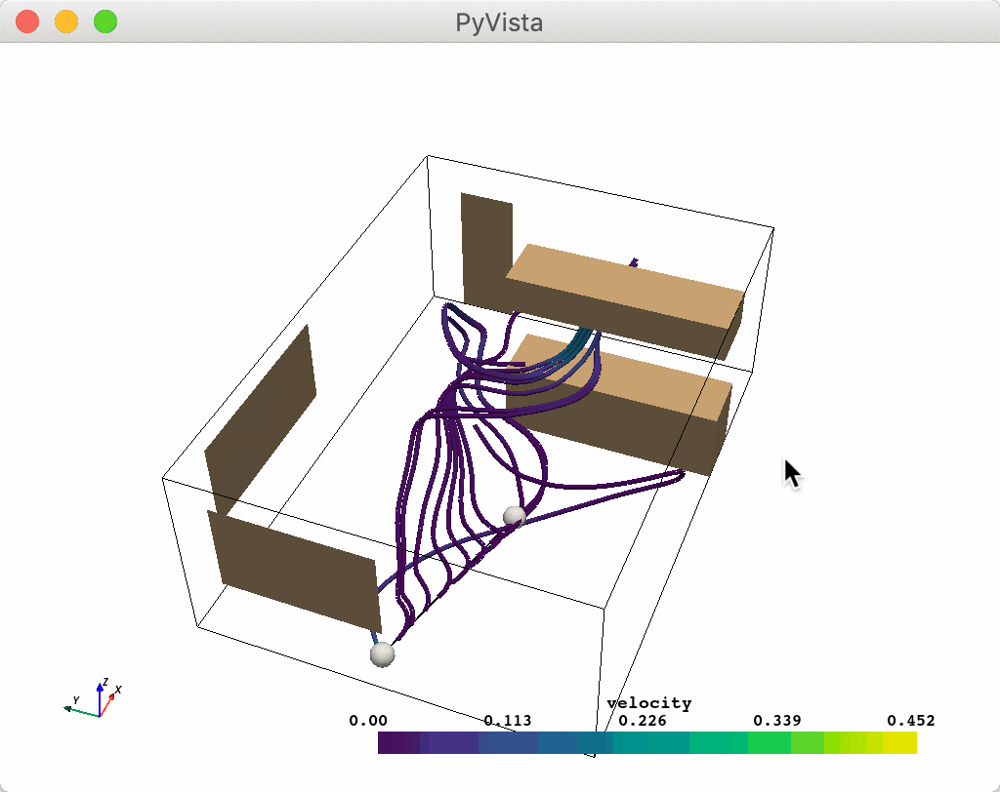
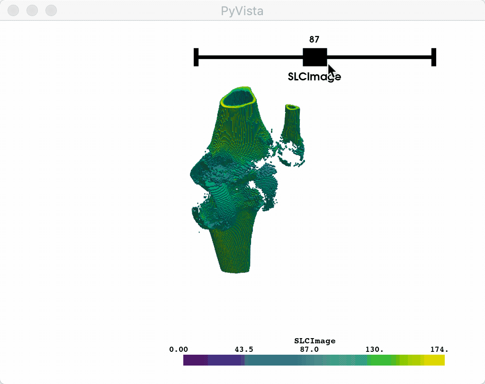
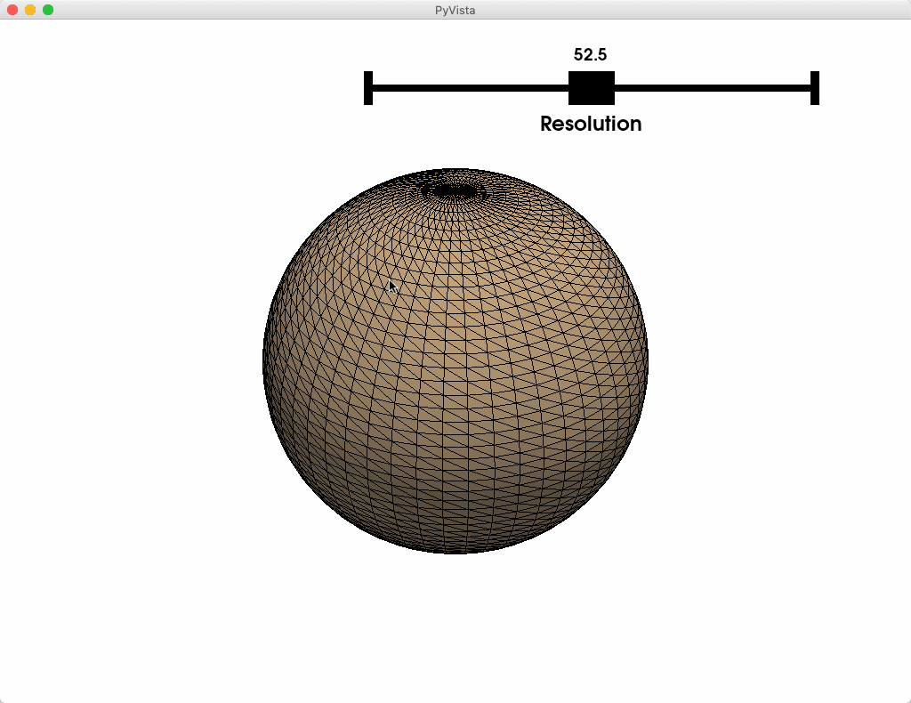
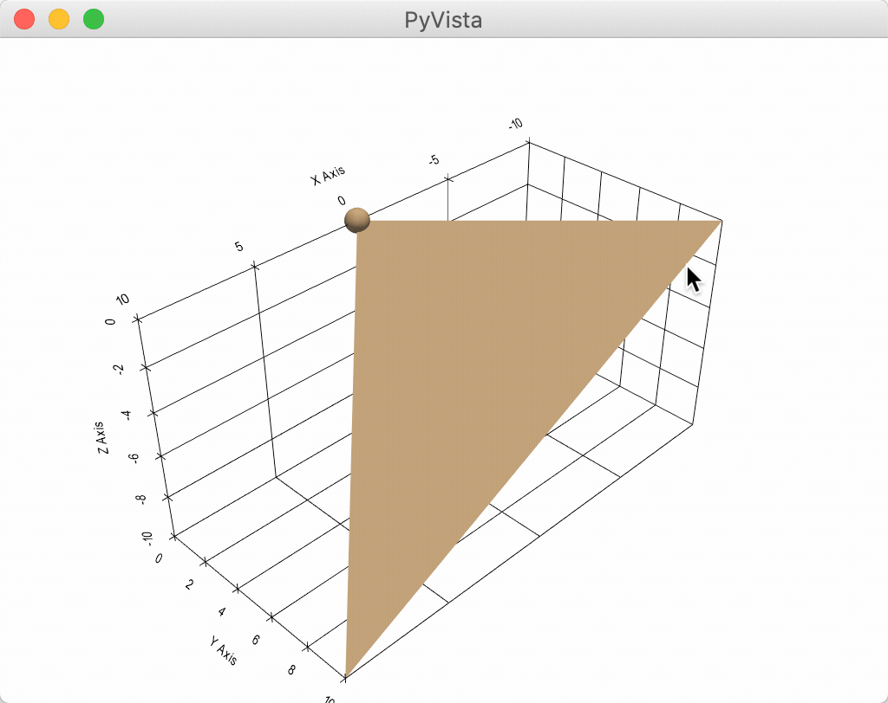
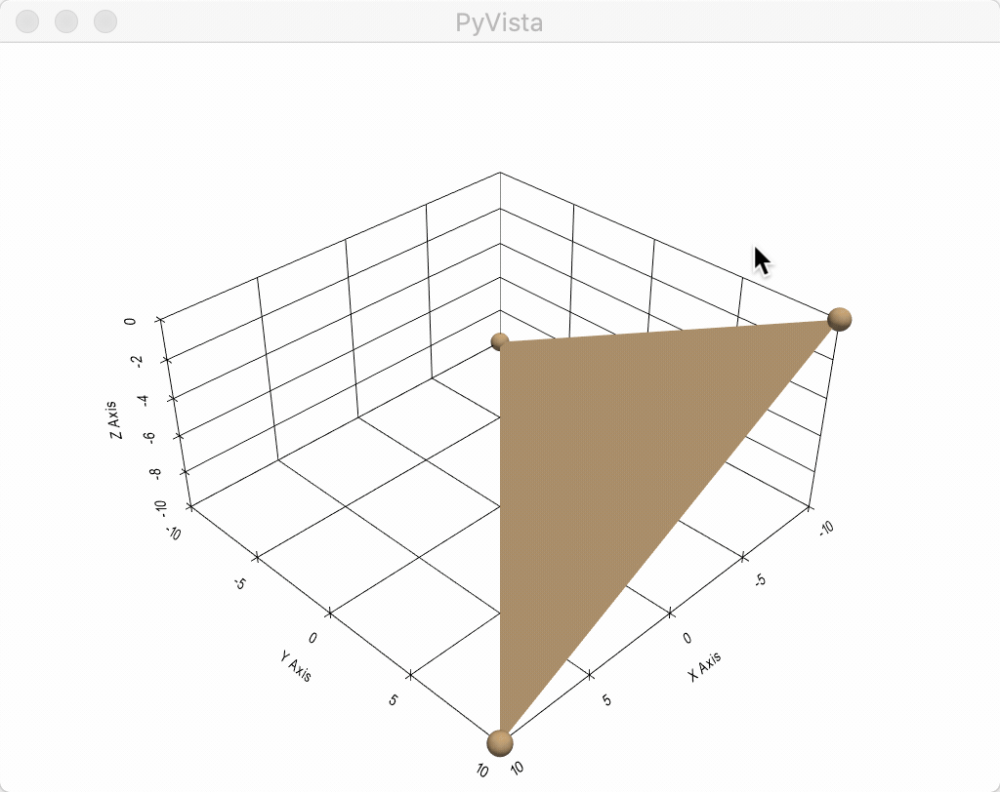

Widgets¶
PyVista has several widgets that can be added to the rendering scene to control filters like clipping, slicing, and thresholding - specifically there are widgets to control the positions of boxes, planes, and lines or slider bars which can all be highly customized through the use of custom callback functions.
Here we’ll take a look a the various widgets, some helper methods that leverage those widgets to do common tasks, and demonstrate how to leverage the widgets for user defined tasks and processing routines.
The pyvista.BasePlotter class inherits all of the widget methods in
pyvista.WidgetHelper so, all of the following methods
are available from any PyVista plotter.
Attributes
Methods
|
Add a box widget to the scene. |
|
Add a checkbox button widget to the scene. |
|
Add a line widget to the scene. |
|
Clip a mesh using a box widget. |
|
Clip a mesh using a plane widget. |
|
Create a contour of a mesh with a slider. |
|
Slice a mesh using a plane widget. |
|
Slice a mesh with three interactive planes. |
|
Slice a mesh with a spline widget. |
|
Apply a threshold on a mesh with a slider. |
|
Add a plane widget to the scene. |
|
Add a slider bar widget. |
|
Add one or many sphere widgets to a scene. |
|
Create and add a spline widget to the scene. |
|
Add a text slider bar widget. |
Disable all of the box widgets. |
|
Disable all of the button widgets. |
|
Disable all of the line widgets. |
|
Disable all of the plane widgets. |
|
Disable all of the slider widgets. |
|
Disable all of the sphere widgets. |
|
Disable all of the spline widgets. |
|
|
Close the widgets. |
-
class
pyvista.WidgetHelper¶ Bases:
objectAn internal class to manage widgets.
It also manages and other helper methods involving widgets.
-
add_box_widget(callback, bounds=None, factor=1.25, rotation_enabled=True, color=None, use_planes=False, outline_translation=True, pass_widget=False)¶ Add a box widget to the scene.
This is useless without a callback function. You can pass a callable function that takes a single argument, the PolyData box output from this widget, and performs a task with that box.
- Parameters
callback (callable) – The method called every time the box is updated. This has two options: Take a single argument, the
PolyDatabox (default) or ifuse_planes=True, then it takes a single argument of the plane collection as avtkPlanesobject.bounds (tuple(float)) – Length 6 tuple of the bounding box where the widget is placed.
factor (float, optional) – An inflation factor to expand on the bounds when placing
rotation_enabled (bool) – If
False, the box widget cannot be rotated and is strictly orthogonal to the cartesian axes.color (string or 3 item list, optional, defaults to white) – Either a string, rgb list, or hex color string.
use_planes (bool, optional) – Changes the arguments passed to the callback to the planes that make up the box.
outline_translation (bool) – If
False, the box widget cannot be translated and is strictly placed at the given bounds.pass_widget (bool) – If true, the widget will be passed as the last argument of the callback
Add a checkbox button widget to the scene.
This is useless without a callback function. You can pass a callable function that takes a single argument, the state of this button widget and performs a task with that value.
- Parameters
callback (callable) – The method called every time the button is clicked. This should take a single parameter: the bool value of the button
value (bool) – The default state of the button
position (tuple(float)) – The absolute coordinates of the bottom left point of the button
size (int) – The size of the button in number of pixels
border_size (int) – The size of the borders of the button in pixels
color_on (string or 3 item list, optional) – The color used when the button is checked. Default is ‘blue’
color_off (string or 3 item list, optional) – The color used when the button is not checked. Default is ‘grey’
background_color (string or 3 item list, optional) – The background color of the button. Default is ‘white’
- Returns
button_widget – The VTK button widget configured as a checkbox button.
- Return type
vtk.vtkButtonWidget
-
add_line_widget(callback, bounds=None, factor=1.25, resolution=100, color=None, use_vertices=False, pass_widget=False)¶ Add a line widget to the scene.
This is useless without a callback function. You can pass a callable function that takes a single argument, the PolyData line output from this widget, and performs a task with that line.
- Parameters
callback (callable) – The method called every time the line is updated. This has two options: Take a single argument, the
PolyDataline (default) or ifuse_vertices=True, then it can take two arguments of the coordinates of the line’s end points.bounds (tuple(float)) – Length 6 tuple of the bounding box where the widget is placed.
factor (float, optional) – An inflation factor to expand on the bounds when placing
resolution (int) – The number of points in the line created
color (string or 3 item list, optional, defaults to white) – Either a string, rgb list, or hex color string.
use_vertices (bool, optional) – Changess the arguments of the callback method to take the end points of the line instead of a PolyData object.
pass_widget (bool) – If true, the widget will be passed as the last argument of the callback
-
add_mesh_clip_box(mesh, invert=False, rotation_enabled=True, widget_color=None, outline_translation=True, **kwargs)¶ Clip a mesh using a box widget.
Add a mesh to the scene with a box widget that is used to clip the mesh interactively.
The clipped mesh is saved to the
.box_clipped_meshesattribute on the plotter.- Parameters
mesh (pyvista.Common) – The input dataset to add to the scene and clip
invert (bool) – Flag on whether to flip/invert the clip
rotation_enabled (bool) – If
False, the box widget cannot be rotated and is strictly orthogonal to the cartesian axes.kwargs (dict) – All additional keyword arguments are passed to
add_meshto control how the mesh is displayed.
-
add_mesh_clip_plane(mesh, normal='x', invert=False, widget_color=None, value=0.0, assign_to_axis=None, tubing=False, origin_translation=True, outline_translation=False, implicit=True, **kwargs)¶ Clip a mesh using a plane widget.
Add a mesh to the scene with a plane widget that is used to clip the mesh interactively.
The clipped mesh is saved to the
.plane_clipped_meshesattribute on the plotter.- Parameters
mesh (pyvista.Common) – The input dataset to add to the scene and clip
normal (str or tuple(float)) – The starting normal vector of the plane
invert (bool) – Flag on whether to flip/invert the clip
kwargs (dict) – All additional keyword arguments are passed to
add_meshto control how the mesh is displayed.
-
add_mesh_isovalue(mesh, scalars=None, compute_normals=False, compute_gradients=False, compute_scalars=True, preference='point', title=None, pointa=(0.4, 0.9), pointb=(0.9, 0.9), widget_color=None, **kwargs)¶ Create a contour of a mesh with a slider.
Add a mesh to the scene with a slider widget that is used to contour at an isovalue of the point data on the mesh interactively.
The isovalue mesh is saved to the
.isovalue_meshesattribute on the plotter.- Parameters
mesh (pyvista.Common) – The input dataset to add to the scene and contour
scalars (str) – The string name of the scalars on the mesh to contour and display
kwargs (dict) – All additional keyword arguments are passed to
add_meshto control how the mesh is displayed.
-
add_mesh_slice(mesh, normal='x', generate_triangles=False, widget_color=None, assign_to_axis=None, tubing=False, origin_translation=True, outline_translation=False, implicit=True, **kwargs)¶ Slice a mesh using a plane widget.
Add a mesh to the scene with a plane widget that is used to slice the mesh interactively.
The sliced mesh is saved to the
.plane_sliced_meshesattribute on the plotter.- Parameters
mesh (pyvista.Common) – The input dataset to add to the scene and slice
normal (str or tuple(float)) – The starting normal vector of the plane
generate_triangles (bool, optional) – If this is enabled (
Falseby default), the output will be triangles otherwise, the output will be the intersection polygons.kwargs (dict) – All additional keyword arguments are passed to
add_meshto control how the mesh is displayed.
-
add_mesh_slice_orthogonal(mesh, generate_triangles=False, widget_color=None, tubing=False, **kwargs)¶ Slice a mesh with three interactive planes.
Adds three interactive plane slicing widgets for orthogonal slicing along each cartesian axis.
-
add_mesh_slice_spline(mesh, generate_triangles=False, n_hanldes=5, resolution=25, widget_color=None, show_ribbon=False, ribbon_color='pink', ribbon_opacity=0.5, **kwargs)¶ Slice a mesh with a spline widget.
Add a mesh to the scene with a spline widget that is used to slice the mesh interactively.
The sliced mesh is saved to the
.spline_sliced_meshesattribute on the plotter.- Parameters
mesh (pyvista.Common) – The input dataset to add to the scene and slice along the spline
generate_triangles (bool, optional) – If this is enabled (
Falseby default), the output will be triangles otherwise, the output will be the intersection polygons.kwargs (dict) – All additional keyword arguments are passed to
add_meshto control how the mesh is displayed.
-
add_mesh_threshold(mesh, scalars=None, invert=False, widget_color=None, preference='cell', title=None, pointa=(0.4, 0.9), pointb=(0.9, 0.9), continuous=False, **kwargs)¶ Apply a threshold on a mesh with a slider.
Add a mesh to the scene with a slider widget that is used to threshold the mesh interactively.
The threshold mesh is saved to the
.threshold_meshesattribute on the plotter.- Parameters
mesh (pyvista.Common) – The input dataset to add to the scene and threshold
scalars (str) – The string name of the scalars on the mesh to threshold and display
invert (bool) – Invert/flip the threshold
kwargs (dict) – All additional keyword arguments are passed to
add_meshto control how the mesh is displayed.
-
add_plane_widget(callback, normal='x', origin=None, bounds=None, factor=1.25, color=None, assign_to_axis=None, tubing=False, outline_translation=False, origin_translation=True, implicit=True, pass_widget=False, test_callback=True)¶ Add a plane widget to the scene.
This is useless without a callback function. You can pass a callable function that takes two arguments, the normal and origin of the plane in that order output from this widget, and performs a task with that plane.
- Parameters
callback (callable) – The method called every time the plane is updated. Takes two arguments, the normal and origin of the plane in that order.
normal (str or tuple(float)) – The starting normal vector of the plane
origin (tuple(float)) – The starting coordinate of the center of the place
bounds (tuple(float)) – Length 6 tuple of the bounding box where the widget is placed.
factor (float, optional) – An inflation factor to expand on the bounds when placing
color (string or 3 item list, optional, defaults to white) – Either a string, rgb list, or hex color string.
assign_to_axis (str or int) – Assign the normal of the plane to be parallel with a given axis: options are (0, ‘x’), (1, ‘y’), or (2, ‘z’).
tubing (bool) – When using an implicit plane wiget, this controls whether or not tubing is shown around the plane’s boundaries.
outline_translation (bool) – If
False, the plane widget cannot be translated and is strictly placed at the given bounds. Only valid when using an implicit plane.origin_translation (bool) – If
False, the plane widget cannot be translated by its origin and is strictly placed at the given origin. Only valid when using an implicit plane.implicit (bool) – When
True, avtkImplicitPlaneWidgetis ued and whenFalse, avtkPlaneWidgetis used.pass_widget (bool) – If true, the widget will be passed as the last argument of the callback
test_callback (bool) – if true, run the callback function after the widget is created.
-
add_slider_widget(callback, rng, value=None, title=None, pointa=(0.4, 0.9), pointb=(0.9, 0.9), color=None, pass_widget=False, event_type='end')¶ Add a slider bar widget.
This is useless without a callback function. You can pass a callable function that takes a single argument, the value of this slider widget, and performs a task with that value.
- Parameters
callback (callable) – The method called every time the slider is updated. This should take a single parameter: the float value of the slider
rng (tuple(float)) – Length two tuple of the minimum and maximum ranges of the slider
value (float, optional) – The starting value of the slider
title (str) – The string label of the slider widget
pointa (tuple(float)) – The relative coordinates of the left point of the slider on the display port
pointb (tuple(float)) – The relative coordinates of the right point of the slider on the display port
color (string or 3 item list, optional, defaults to white) – Either a string, rgb list, or hex color string.
pass_widget (bool) – If true, the widget will be passed as the last argument of the callback
event_type (str) – Either ‘start’, ‘end’ or ‘always’, this defines how often the slider interacts with the callback.
-
add_sphere_widget(callback, center=(0, 0, 0), radius=0.5, theta_resolution=30, phi_resolution=30, color=None, style='surface', selected_color='pink', indices=None, pass_widget=False, test_callback=True)¶ Add one or many sphere widgets to a scene.
Use a sphere widget to control a vertex location.
- Parameters
callback (callable) – The function to call back when the widget is modified. It takes a single argument: the center of the sphere as a XYZ coordinate.
center (tuple(float)) – Length 3 array for the XYZ coordinate of the sphere’s center when placing it in the scene. If more than one location is passed, then that many widgets will be added and the callback will also be passed the integer index of that widget.
radius (float) – The radius of the sphere
theta_resolution (int , optional) – Set the number of points in the longitude direction (ranging from start_theta to end theta).
phi_resolution (int, optional) – Set the number of points in the latitude direction (ranging from start_phi to end_phi).
color (str) – The color of the sphere’s surface
style (str) – Representation style: surface or wireframe
selected_color (str) – Color of the widget when selected during interaction
pass_widget (bool) – If true, the widget will be passed as the last argument of the callback
test_callback (bool) – if true, run the callback function after the widget is created.
-
add_spline_widget(callback, bounds=None, factor=1.25, n_hanldes=5, resolution=25, color='yellow', show_ribbon=False, ribbon_color='pink', ribbon_opacity=0.5, pass_widget=False)¶ Create and add a spline widget to the scene.
Use the bounds argument to place this widget. Several “handles” are used to control a parametric function for building this spline. Click directly on the line to translate the widget.
Note
This widget has trouble displaying certain colors. Use only simple colors (white, black, yellow).
- Parameters
callback (callable) – The method called every time the spline is updated. This passes a
pyvista.PolyDataobject to the callback function of the generated spline.bounds (tuple(float)) – Length 6 tuple of the bounding box where the widget is placed.
factor (float, optional) – An inflation factor to expand on the bounds when placing
n_handles (int) – The number of interactive spheres to control the spline’s parametric function.
resolution (int) – The number of points in the spline created between all the handles
color (string or 3 item list, optional, defaults to white) – Either a string, rgb list, or hex color string.
show_ribbon (bool) – If
True, the poly plane used for slicing will also be shown.pass_widget (bool) – If true, the widget will be passed as the last argument of the callback
-
add_text_slider_widget(callback, data, value=None, pointa=(0.4, 0.9), pointb=(0.9, 0.9), color=None, event_type='end')¶ Add a text slider bar widget.
This is useless without a callback function. You can pass a callable function that takes a single argument, the value of this slider widget, and performs a task with that value.
- Parameters
callback (callable) – The method called every time the slider is updated. This should take a single parameter: the float value of the slider
data (list) – The list of possible values displayed on the slider bar
value (float, optional) – The starting value of the slider
pointa (tuple(float)) – The relative coordinates of the left point of the slider on the display port
pointb (tuple(float)) – The relative coordinates of the right point of the slider on the display port
color (string or 3 item list, optional, defaults to white) – Either a string, rgb list, or hex color string.
event_type (str) – Either ‘start’, ‘end’ or ‘always’, this defines how often the slider interacts with the callback.
- Returns
slider_widget – The VTK slider widget configured to display text.
- Return type
vtk.vtkSliderWidget
-
clear_box_widgets()¶ Disable all of the box widgets.
Disable all of the button widgets.
-
clear_line_widgets()¶ Disable all of the line widgets.
-
clear_plane_widgets()¶ Disable all of the plane widgets.
-
clear_slider_widgets()¶ Disable all of the slider widgets.
-
clear_sphere_widgets()¶ Disable all of the sphere widgets.
-
clear_spline_widgets()¶ Disable all of the spline widgets.
-
close()¶ Close the widgets.
-
Box Widget¶
The box widget can be enabled and disabled by the
pyvista.WidgetHelper.add_box_widget() and
pyvista.WidgetHelper.clear_box_widgets() methods respectively.
When enabling the box widget, you must provide a custom callback function
otherwise the box would appear and do nothing - the callback functions are
what allow us to leverage the widget to perform a task like clipping/cropping.
Considering that using a box to clip/crop a mesh is one of the most common use
cases, we have included a helper method that will allow you to add a mesh to a
scene with a box widget that controls its extent, the
pyvista.WidgetHelper.add_mesh_clip_box() method.
import pyvista as pv
from pyvista import examples
mesh = examples.download_nefertiti()
p = pv.Plotter(notebook=False)
p.add_mesh_clip_box(mesh, color='white')
p.show()

Plane Widget¶
The plane widget can be enabled and disabled by the
pyvista.WidgetHelper.add_plane_widget() and
pyvista.WidgetHelper.clear_plane_widgets() methods respectively.
As with all widgets, you must provide a custom callback method to utilize that
plane. Considering that planes are most commonly used for clipping and slicing
meshes, we have included two helper methods for doing those tasks!
Let’s use a plane to clip a mesh:
import pyvista as pv
from pyvista import examples
vol = examples.download_brain()
p = pv.Plotter(notebook=False)
p.add_mesh_clip_plane(vol)
p.show()

Or you could slice a mesh using the plane widget:
p = pv.Plotter(notebook=False)
p.add_mesh_slice(vol)
p.show()

Or you could leverage the plane widget for some custom task like glyphing a vector field along that plane.
import pyvista as pv
from pyvista import examples
mesh = examples.download_carotid()
p = pv.Plotter(notebook=False)
p.add_mesh(mesh.contour(8).extract_largest(), opacity=0.5)
def my_plane_func(normal, origin):
slc = mesh.slice(normal=normal, origin=origin)
arrows = slc.glyph(orient='vectors', scale="scalars", factor=0.01)
p.add_mesh(arrows, name='arrows')
p.add_plane_widget(my_plane_func)
p.show_grid()
p.add_axes()
p.show()

Line Widget¶
The line widget can be enabled and disabled by the
pyvista.WidgetHelper.add_line_widget() and
pyvista.WidgetHelper.clear_line_widgets() methods respectively.
Unfortunately, PyVista does not have any helper methods to utilize this
widget, so it is necessary to pas a custom callback method.
One particularly fun example is to use the line widget to create source for
the pyvista.DataSetFilters.streamlines() filter.
import pyvista as pv
from pyvista import examples
import numpy as np
pv.set_plot_theme('doc')
mesh = examples.download_kitchen()
furniture = examples.download_kitchen(split=True)
arr = np.linalg.norm(mesh['velocity'], axis=1)
clim = [arr.min(), arr.max()]
p = pv.Plotter(notebook=False)
p.add_mesh(furniture, name='furniture', color=True)
p.add_mesh(mesh.outline(), color='black')
p.add_axes()
def simulate(pointa, pointb):
streamlines = mesh.streamlines(n_points=10, max_steps=100,
pointa=pointa, pointb=pointb,
integration_direction='forward')
p.add_mesh(streamlines, name='streamlines', line_width=5,
render_lines_as_tubes=True, clim=clim)
p.add_line_widget(callback=simulate, use_vertices=True)
p.show()

Slider Bar Widget¶
The slider widget can be enabled and disabled by the
pyvista.WidgetHelper.add_slider_widget() and
pyvista.WidgetHelper.clear_slider_widgets() methods respectively.
This is one of the most versatile widgets as it can control a value that can
be used for just about anything.
One helper method we’ve add is the
pyvista.WidgetHelper.add_mesh_threshold() method which leverages the
slider widget to control a thresholding value.
import pyvista as pv
from pyvista import examples
mesh = examples.download_knee_full()
p = pv.Plotter(notebook=False)
p.add_mesh_threshold(mesh)
p.show()

Or you could leverage a custom callback function that takes a single value from the slider as its argument to do something like control the resolution of a mesh:
p = pv.Plotter(notebook=False)
def create_mesh(value):
res = int(value)
sphere = pv.Sphere(phi_resolution=res, theta_resolution=res)
p.add_mesh(sphere, name='sphere', show_edges=True)
return
p.add_slider_widget(create_mesh, [5, 100], title='Resolution')
p.show()

Sphere Widget¶
The slider widget can be enabled and disabled by the
pyvista.WidgetHelper.add_sphere_widget() and
pyvista.WidgetHelper.clear_sphere_widgets() methods respectively.
This is a very versatile widgets as it can control vertex location that can
be used to control or update the location of just about anything.
We don’t have any convenient helper methods that utilize this widget out of the box, but we have added a lot of ways to use this widget so that you can easily add several widgets to a scene.
Let’s look at a few use cases that all update a surface mesh.
Example A¶
Use a single sphere widget
import pyvista as pv
import numpy as np
# Create a triangle surface
surf = pv.PolyData()
surf.points = np.array([[-10,-10,-10],
[10,10,-10],
[-10,10,0],])
surf.faces = np.array([3, 0, 1, 2])
p = pv.Plotter(notebook=False)
def callback(point):
surf.points[0] = point
p.add_sphere_widget(callback)
p.add_mesh(surf, color=True)
p.show_grid()
p.show()

Example B¶
Use several sphere widgets at once
import pyvista as pv
import numpy as np
# Create a triangle surface
surf = pv.PolyData()
surf.points = np.array([[-10,-10,-10],
[10,10,-10],
[-10,10,0],])
surf.faces = np.array([3, 0, 1, 2])
p = pv.Plotter(notebook=False)
def callback(point, i):
surf.points[i] = point
p.add_sphere_widget(callback, center=surf.points)
p.add_mesh(surf, color=True)
p.show_grid()
p.show()

Example C¶
This one is the coolest - use three sphere widgets to update perturbations on a surface and interpolate between them with some boundary conditions
from scipy.interpolate import griddata
import numpy as np
import pyvista as pv
def get_colors(n):
"""A helper function to get n colors"""
from itertools import cycle
import matplotlib
cycler = matplotlib.rcParams['axes.prop_cycle']
colors = cycle(cycler)
colors = [next(colors)['color'] for i in range(n)]
return colors
# Create a grid to interpolate to
xmin, xmax, ymin, ymax = 0, 100, 0, 100
x = np.linspace(xmin, xmax, num=25)
y = np.linspace(ymin, ymax, num=25)
xx, yy, zz = np.meshgrid(x, y, [0])
# Make sure boundary conditions exist
boundaries = np.array([[xmin,ymin,0],
[xmin,ymax,0],
[xmax,ymin,0],
[xmax,ymax,0]])
# Create the PyVista mesh to hold this grid
surf = pv.StructuredGrid(xx, yy, zz)
# Create some initial perturbations
# - this array will be updated inplace
points = np.array([[33,25,45],
[70,80,13],
[51,57,10],
[25,69,20]])
# Create an interpolation function to update that surface mesh
def update_surface(point, i):
points[i] = point
tp = np.vstack((points, boundaries))
zz = griddata(tp[:,0:2], tp[:,2], (xx[:,:,0], yy[:,:,0]), method='cubic')
surf.points[:,-1] = zz.ravel(order='F')
return
# Get a list of unique colors for each widget
colors = get_colors(len(points))
# Begin the plotting routine
p = pv.Plotter(notebook=False)
# Add the surface to the scene
p.add_mesh(surf, color=True)
# Add the widgets which will update the surface
p.add_sphere_widget(update_surface, center=points,
color=colors, radius=3)
# Add axes grid
p.show_grid()
# Show it!
p.show()

Spline Widget¶
A spline widget can be added to the scenee by the
pyvista.WidgetHelper.add_spline_widget() and
pyvista.WidgetHelper.clear_spline_widgets() methods respectively.
This widget allows users to interactively create a poly line (spline) through
a scene and use that spline.
A common task with splines is to slice a volumetric dataset using an irregular
path. To do this, we have added a convenient helper method which leverages the
pyvista.DataSetFilters.slice_along_line() filter named
pyvosta.WidgetHelper.add_mesh_slice_spline().